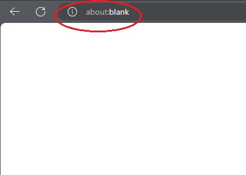
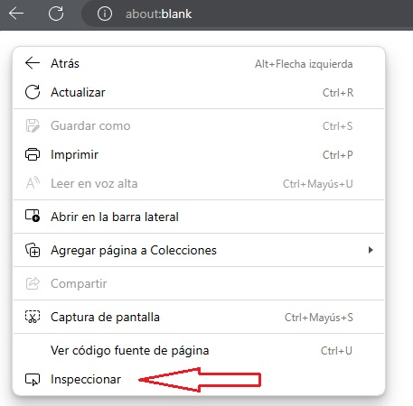
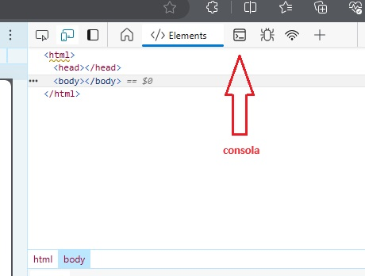
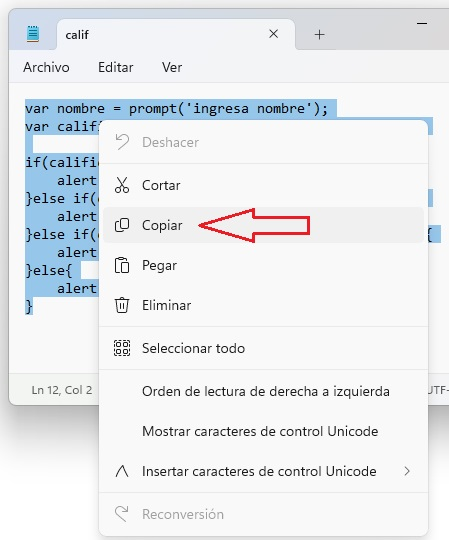
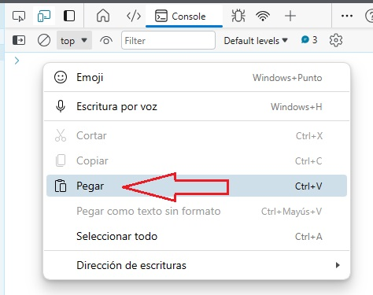
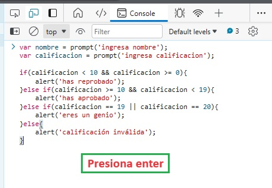

Construyamos un programa.
Construiremos un programa que envíe un mensaje al usuario depndiendo de la calificación que obtuvo.
- si la calificación está entre cero y 9, el mensaje dirá "has rerobado!!"
- si la calificación está entre 10 y 18, el mensaje dirá "has aprobado!"
- si la calificación está entre 19 y 20, el mensaje dirá "eres un genio!"
- si la calificación no está entre los rangos descritos, el mensje dirá "error, calificación inválida"
Supongo que con tanto Raptor se olvidaron del bloc de notas, bueno, volveremos a usarlo, aunque si ya comenzaron a usar un editor de texto y lo prefieren, pueden hacerlo, será mucho más rápido y fácil. En el bloc de notas escribiremos el siguiente programa:
usaremos una función "prompt" que sería el quivalente al "input" que vimos en Raptor y el "input" que vimos en HTML. Declaramos una variable llamada "nombre" que contendrá la función "prompt" que a su vez contendrá el mensaje que le dirá al usuario que ingrese su nombre.
var nombre = prompt('ingresa tu nombre');
luego declaramos otra variable llamada calificacion, y también le agregamos la función prompt.
var calificacion = prompt('ingresa tu calificacion');
luego de declarada la variable, podemos comenzar con los condicionales.
if(calificacion < 10 && calificacion >= 0){alert('has reprobado');}
else if(calificacion >= 10 && calificacion > 19){alert('has aprobado');}
else if(calificacion == 19 || calificacion == 20){alert('eres un genio');}
eslse(){alert('calificaion inválida');}
Y cómo hacemos ahora para correr nuestro programa? bueno, en raptor era sencillo, sólo clicabas "play" y listo. Acá es un poco más complicado y a la vz sencillo. JavaScript es un lenguaje cuyo compilador es el navegador web, así que una buena forma de correr nuestro ejemplo es justamente ahí.
Abrimos una página web cualquiera y luego abrimos también la consola, como ya sabemos hacer, una vez ahí, limpiamos el historial y copiamos y pegamos (o volvemos a escribir) nuestro código que hemos construido. Presionamos enter y ya está
si queremos evitar el estar pensando qué página abrir, sólo escribe about:blank y listo





